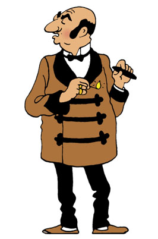

Tintin is the main character of Tintin. He got his quiff when a car drove so fast it made his hair go up!
Tintin has a dog called SNOWY.
Tintin has two best friends called Haddock and Calculus.


These guys try to arrest Tintin a lot because they are the Thompson twins!

This guy I mistake for as my best friend aka Rastapopoulos.
This guy needs a job aka Mitsuhirato.
This guy used to be cool aka Allan Thompson.

These guys above are also my favourite Tintin characters.
Here is a video of tintin
The Adventures of Tintin from James Curran on Vimeo.